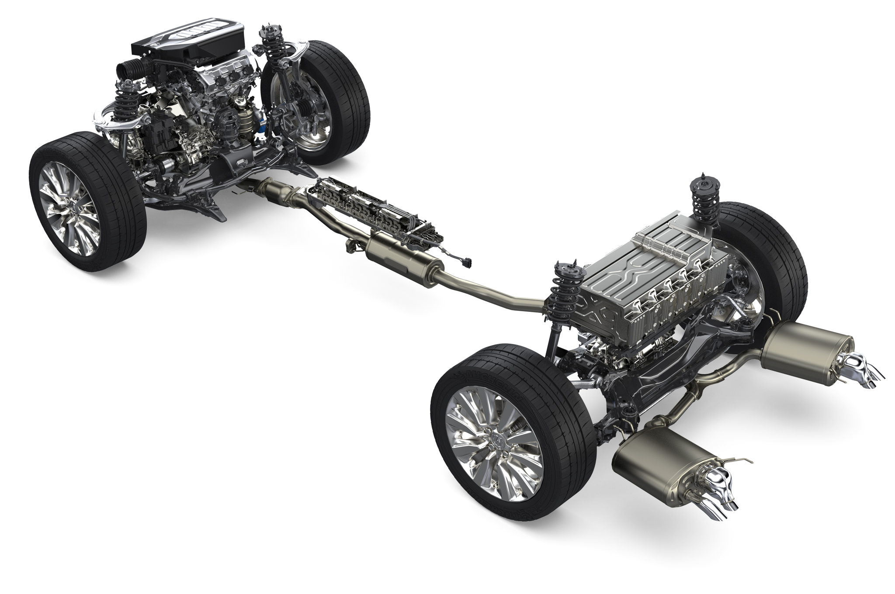

Drivetrain
The drivetrain transfers power from the engine to the wheels, enabling the vehicle to move. It includes components like the transmission, driveshaft, differential, and axles.
Mechanical Process
- Engine Output: Generates rotational force to power the vehicle.
- Transmission: Adjusts the engine's torque and speed for different driving conditions.
- Driveshaft: Transfers power from the transmission to the differential.
- Differential: Splits power between wheels and allows different wheel speeds when turning.
Core Components
- Transmission: Gear system that adjusts engine power.
- Driveshaft: Shaft connecting transmission to differential.
- Differential: Gear assembly distributing power to wheels.
- Axles: Deliver torque to the drive wheels.